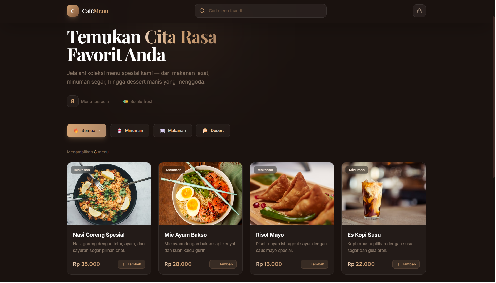

Aplikasi menu cafe modern yang dibangun menggunakan React.js.
Project ini berfokus pada pengalaman pengguna (UX) yang interaktif,
pengambilan data menu dari REST API Laravel, dan sistem pemesanan yang terintegrasi langsung dengan WhatsApp.

Teknologi
React.jsTailwind CSSLaravel (Backend API)Fetch APIWhatsApp API
Fitur Utama
Dynamic Menu Fetching: Mengambil data menu makanan dan minuman secara real-time dari API.
Interactive UI: Antarmuka yang responsif dan cepat menggunakan React hooks (useState, useEffect).
Shopping Cart System: Pengguna dapat menambah, mengurang, dan menghapus item dari keranjang.
WhatsApp Checkout: Menghasilkan format pesan pesanan otomatis dan mengarahkan pengguna ke WhatsApp untuk finalisasi.
Cara Kerja
Aplikasi ini memisahkan antara Frontend (React) dan Backend (Laravel). Frontend melakukan request ke endpoint API untuk menampilkan kategori dan menu.
Setelah pengguna memilih menu dan menekan tombol checkout, sistem akan mengumpulkan data pesanan dan membukanya di aplikasi WhatsApp dengan pesan yang sudah terformat rapi.
Preview Aplikasi
Yang Saya Pelajari
Manajemen state di React untuk aplikasi e-commerce sederhana.
Integrasi Frontend dengan RESTful API menggunakan Fetch.
Penerapan Tailwind CSS untuk layouting yang cepat dan modern.
Handling string dan URL untuk integrasi pihak ketiga (WhatsApp).